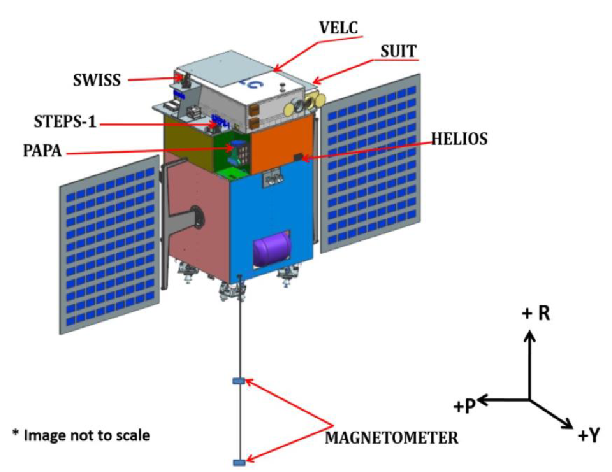

Technical aspects of VELC onboard ADITYA-L1: India’s first solar space mission
This article is the review of a journal paper on the Visible Emission Line Coronagraph, the primary payload onboard India’s first solar space mission, ADITYA-L1. The paper discusses some technical details of VELC and the work done in analyzing them. This article is an attempt to introduce the reader to the instrument, its science and the content of the paper in a simplified manner.
ADITYA-L1 is an Indian satellite with seven payloads, planned to be launched next year. This satellite will not orbit the Earth; rather, it will be at the Lagrangian 1 (L1) point. The L1 point is the location in the Sun – Earth line where their combined gravitational pull equals the centripetal force needed for a small object to move with them. This will be India’s first space mission to study the Sun. The Visible Emission Line Coronagraph (VELC) is arguably the primary payload in this mission, and the paper under discussion here deals with characterizing certain technical aspects of VELC.

Figure 1: Illustration of the ADITYA-L1 satellite with its payloads. Credits: ISRO
The VELC will observe the solar corona, which is the tenuous, outermost layer of the solar atmosphere. It will analyze the coronal temperature, plasma velocity, density, etc. It will also study Coronal Mass Ejections (CMEs) and the solar wind. CMEs are large clouds of fast-moving plasma, formed by spectacular explosions in the corona, whereas the solar wind is a continuous stream of charged particles the Sun sends out to interplanetary space. The mesmerizing aurora (also called polar lights) are caused by the interaction of the solar wind with the Earth’s magnetic field.
The details of VELC
The VELC consists of a coronagraph, spectrograph, polarimetry module and detectors, aside from auxiliary optics.
A coronagraph is an instrument used to observe the very dim solar corona, by blocking the bright central disk of the Sun. Coronagraphs usually have a central occulter to block the light from the solar disk; like an artificial solar eclipse. This causes only the surrounding light from the corona to pass through the coronagraph and is available for further analysis or recording. In the case of VELC, instead of a central occulter, a mirror with a circular hole at its center is used to discard the disk light and reflect only the coronal light into the instrument.
In general, coronagraphs occult not just the solar disk, but some of the surrounding regions also. This is to reduce the light scattered from the edge of the occulter. Here, the disadvantage is that we won’t be able to observe and study the lower corona, adjacent to the solar disk. For example, we say that the coronagraph field-of-view (FOV) starts from 2 radii of the Sun if it occults everything within a distance of twice the solar radius from the center of the Sun. The VELC will have the smallest occulting radius among coronagraphs, with the FOV starting from 1.05 radii of the Sun.
A spectrograph is an instrument that splits polychromatic light (consisting of multiple wavelengths) into its constituent wavelengths (spectrum). This is similar to a prism splitting white light into VIBGYOR – at different angles from the face of the prism, we get different wavelengths of light. In VELC, a component called grating is used to generate the spectrum. If in a prism, refraction causes white light to split into different wavelengths, in the VELC grating, reflection, diffraction and interference together create the spectra. The presence or absence of certain wavelengths in light and their relative amplitudes can be used to find out details of the source of the light and the medium through which it travelled. Thus, the spectrum gives us details of the solar corona.
Next comes the polarimetry module. Polarimetry is the technique of understanding the direction of electric and magnetic fields associated with an electromagnetic (EM) wave. We know that light is an EM wave and that the electric and magnetic fields are perpendicular to each other, and they lie in a plane (say, Plane A) perpendicular to the direction of propagation of light. But these EM fields could be oriented in infinitely many perpendicular directions in Plane A. The electric field and magnetic field could be oriented North-South and East-West respectively, or they could be oriented North-East – South-West and North-West – South-East, just to mention two examples.
Light is a collection of photons and different photons could have different orientations of EM fields in Plane A as described above. The orientation of the EM fields depends on the process that creates the photon and the environment in which it is created. In general, a source of light will be an equal mix of all these different processes, with the result that the generated light will have EM fields in all directions in Plane A. We say that all directions in Plane A are equally probable for the EM field, and we call the resultant light unpolarised light.
Now, if the source of photons has an asymmetry, i.e. if the processes that create a particular orientation of the EM field are in abundance, and/or if the source environment (say ambient EM fields) aides the generation of EM fields in a particular direction, then the light we observe will have an abundance of EM field oriented in that direction; now the light is said to be polarised.
The magnetic field in a region affects the polarization of light generated from that region, and thus we can calculate the magnetic field by measuring the polarization. Understanding the distribution of magnetic fields is crucial to our analysis of the solar atmosphere. Thus, this is one of the ways in which measuring the polarisation of light helps us study the solar corona. For measuring polarisation, the polarimetry module contains special optics called the polarisation modulator and analyser.
The detectors in VELC are CMOS-based. The detectors in normal DSLR cameras are also CMOS based, with the difference that the VELC detectors have very low noise and are adapted for use in space. When light falls on the pixels of these detectors, electrons are generated by the photoelectric effect. Higher the intensity of light, the higher the number of electrons generated. When the detector is read out, the internal circuitry will convert the electron count in each pixel to a digital count. This is how an image is generated by a CMOS detector.
The path of light through VELC
The light entering the instrument from the coronagraph is split into two, based on its wavelength. This is done by a Dichroic Beam Splitter (DBS) which reflects light of a certain wavelength while transmitting other wavelengths. The reflected light (wavelength < 5100 Å) goes to a section called the continuum channel while the transmitted light goes to another section called the spectral channel.
In the continuum channel, a filter is used to cut down the wavelength to 5000 Å ± 5 Å (ie. green colour light). This light is then focused on a CMOS camera and the image of the corona is recorded.
In the spectral channel, the light transmitted by the DBS is focused on a multi-slit before it goes to the spectrograph. The multi-slit is a unique feature of the VELC. It consists of four slits parallel to and equidistant from each other. A slit is used to restrict not the intensity of light, but the region from which the light is originating. Thus, each slit will observe only a narrow strip of the region in the corona. A multi-slit with four slits will observe four different locations in the corona simultaneously. Now, by moving either the multi-slit or the focused image on the multi-slit, we can observe different parts of the corona; this is called scanning the field-of-view (FOV), and scanning is done perpendicular to the length of the slit. Compared to a single-slit setup, four slits take only one-fourth the time to scan the same (FOV). This means the VELC can do observations four times faster than a single-slit spectrograph.
After passing through the multi-slit, the light falls on the spectrograph grating, where it is split into multiple wavelengths as a function of the angle of reflection from the grating. Three wavelength bands (5303 Å: cyan - green colour, 7892 Å: red - near-infrared, 10747 Å: near-infrared) are filtered from this section and each directed to a separate CMOS detector, where the spectra of the corona at that wavelength are recorded.
The 10747-channel has a polarimetry module in front of its detector. Thus we can find the polarization of light from the 10747-spectra.
Overview of the paper
Ritesh Patel and their team calculated the number of photons (photon count) and signal-to-noise-ratio (SNR) in all three wavelength bands in the spectral channel, for different exposure times, different widths of the multi-slit, different coronal heights, temperatures, etc. To calculate the photon count, we made use of the atomic database, CHIANTI. CHIANTI inputs environmental parameters like the temperature, electron density, etc., and instrument parameters like the instrument’s full-width-at-half-maximum (FWHM) (which depends on the slit-width), spectral dispersion, etc. It then gives a distribution of the photon count as a function of the wavelength.
The SNR is a measure of the goodness of a signal. Whenever we make an observation, in addition to our signal, we also get noise from the surroundings. This consists of signals from other sources and the internal noise of the instrument. SNR is the ratio of the strength (power or amplitude) of our signal to the strength of the noise. For example, SNR=1 means that the signal and noise levels are the same. If SNR < 1, we say that our signal is embedded in the noise. In such a condition, it will be difficult to discriminate noise from our signal. Thus, a large value of SNR is always preferred. In the case of VELC, SNR is calculated by comparing the CHIANTI photon count with the photon count from simulated instrument scatter and noise. This is done for all three wavelengths in the spectral channel.
A larger slit width means more photons and higher SNR, but a smaller exposure time for our detectors, since they can only observe a certain amount of photons before getting saturated. For the VELC 10747-channel, the exposure time is fixed. So based on this exposure time, the slit-width is optimized to achieve the required photon count and SNR.
The CHIANTI spectra is also transformed into a multi-slit spectral image, one for each wavelength (Figure 4 in the paper). These are how the outputs of the VELC spectral channel will look like. In this particular case, the synthetic spectra are created for CME (Coronal Mass Ejection) data from the K-Coronagraph at Mauna Loa Solar Observatory (MLSO/KCor).
So, in this paper, we calculated the slit-width to optimize the observations of the VELC. We also generated the synthetic spectra for a CME. The data we got here will help in setting up observation procedures of the VELC to perfectly capture CMEs and other dynamical solar events.
Original paper: Characterizing Spectral Channels of Visible Emission Line Coronagraph of Aditya-L1
First Author: Ritesh Patel
Co-authors: A.Megha, Arpit Kumar Srivastav, Vaibhav Pant, M.Vishnu, K.Sankarasubramanian, Dipankar Banerjee
First author’s Institution: Indian Institute of Astrophysics, Bangalore, India Aryabhatta Research Institute of Observational Sciences, Nainital, India
202